Exercise 18： Let D be the centroid of △BFC. G, D, A are collinear and GA=3GD. H is the midpoint of CA. BA=AF. Prove that BF⊥GH.
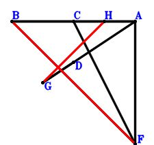
\(\because \) D is the centroid of △BFC \(\therefore \small\overrightarrow{AD}=\dfrac{\small\overrightarrow{AB}}{3} + \dfrac{\small\overrightarrow{AC}}{3} + \dfrac{\small\overrightarrow{AF}}{3}\).\(\because \) G, D, A are collinear and GA=3GD \(\therefore \small\overrightarrow{AG}=\dfrac{3 \small\overrightarrow{AD}}{2}=\dfrac{\small\overrightarrow{AB}}{2} + \dfrac{\small\overrightarrow{AC}}{2} + \dfrac{\small\overrightarrow{AF}}{2}\).\(\because \) H is the midpoint of CA \(\therefore \small\overrightarrow{AH}=\dfrac{\small\overrightarrow{AC}}{2}\).\(\because \) BA=AF \( \therefore\small\overrightarrow{AB}^{2} - \small\overrightarrow{AF}^{2}=0.\)In conclusion, \(\small\overrightarrow{FB} \cdot \small\overrightarrow{GH}=\left(\small\overrightarrow{AB} - \small\overrightarrow{AF}\right) \cdot \left(- \small\overrightarrow{AG} + \small\overrightarrow{AH}\right)=\left(- \dfrac{\small\overrightarrow{AB}}{2} - \dfrac{\small\overrightarrow{AF}}{2}\right) \cdot \left(\small\overrightarrow{AB} - \small\overrightarrow{AF}\right)=- \dfrac{\small\overrightarrow{AB}^{2}}{2} + \dfrac{\small\overrightarrow{AF}^{2}}{2}=0\), that is, BF⊥GH.
Exercise 34： Let GDAF be a trapezoid with FA//GD and FA=2GD. G, D are the midpoints of CH, CB, respectively. BA=FA. Prove that HA⊥BF.
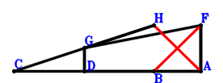
\(\because \) D is the midpoint of CB \(\therefore \small\overrightarrow{AD}=\dfrac{\small\overrightarrow{AB}}{2} + \dfrac{\small\overrightarrow{AC}}{2}\).\(\because \) FA//GD and FA=2GD \(\therefore \small\overrightarrow{AG}=\dfrac{\small\overrightarrow{AB}}{2} + \dfrac{\small\overrightarrow{AC}}{2} + \dfrac{\small\overrightarrow{AF}}{2}\).\(\because \) G is the midpoint of CH \(\therefore \small\overrightarrow{AH}=- \small\overrightarrow{AC} + 2 \small\overrightarrow{AG}=\small\overrightarrow{AB} + \small\overrightarrow{AF}\).\(\because \) BA=FA \( \therefore\small\overrightarrow{AB}^{2} - \small\overrightarrow{AF}^{2}=0.\)In conclusion, \(\small\overrightarrow{FB} \cdot \small\overrightarrow{HA}=- \small\overrightarrow{AH} \cdot \left(\small\overrightarrow{AB} - \small\overrightarrow{AF}\right)=- \left(\small\overrightarrow{AB} - \small\overrightarrow{AF}\right) \cdot \left(\small\overrightarrow{AB} + \small\overrightarrow{AF}\right)=- \small\overrightarrow{AB}^{2} + \small\overrightarrow{AF}^{2}=0\), that is, HA⊥BF.
Exercise 45： Let GAFC be a parallelogram. D is the midpoint of GH and CB. AB=AF. Prove that AH⊥FB.
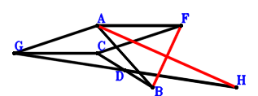
\(\because \) D is the midpoint of CB \(\therefore \small\overrightarrow{AD}=\dfrac{\small\overrightarrow{AB}}{2} + \dfrac{\small\overrightarrow{AC}}{2}\).\(\because \) GAFC is a parallelogram \(\therefore \small\overrightarrow{AG}=\small\overrightarrow{AC} - \small\overrightarrow{AF}\).\(\because \) D is the midpoint of GH \(\therefore \small\overrightarrow{AH}=\small\overrightarrow{AB} + \small\overrightarrow{AC} - \small\overrightarrow{AG}=\small\overrightarrow{AB} + \small\overrightarrow{AF}\).\(\because \) AB=AF \( \therefore\small\overrightarrow{AB}^{2} - \small\overrightarrow{AF}^{2}=0.\)In conclusion, \(\small\overrightarrow{FB} \cdot \small\overrightarrow{HA}=- \small\overrightarrow{AH} \cdot \left(\small\overrightarrow{AB} - \small\overrightarrow{AF}\right)=- \left(\small\overrightarrow{AB} - \small\overrightarrow{AF}\right) \cdot \left(\small\overrightarrow{AB} + \small\overrightarrow{AF}\right)=- \small\overrightarrow{AB}^{2} + \small\overrightarrow{AF}^{2}=0\), that is, AH⊥FB.
Exercise 57： Let GHBC be a parallelogram. D is the midpoint of GA and CF. BA=FA. Prove that HA⊥BF.
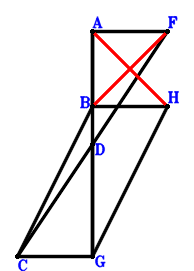
\(\because \) D is the midpoint of CF \(\therefore \small\overrightarrow{AD}=\dfrac{\small\overrightarrow{AC}}{2} + \dfrac{\small\overrightarrow{AF}}{2}\).\(\because \) D is the midpoint of GA \(\therefore \small\overrightarrow{AG}=2 \small\overrightarrow{AD}=\small\overrightarrow{AC} + \small\overrightarrow{AF}\).\(\because \) GHBC is a parallelogram \(\therefore \small\overrightarrow{AH}=\small\overrightarrow{AB} + \small\overrightarrow{AF}\).\(\because \) BA=FA \( \therefore\small\overrightarrow{AB}^{2} - \small\overrightarrow{AF}^{2}=0.\)In conclusion, \(\small\overrightarrow{FB} \cdot \small\overrightarrow{HA}=- \small\overrightarrow{AH} \cdot \left(\small\overrightarrow{AB} - \small\overrightarrow{AF}\right)=- \left(\small\overrightarrow{AB} - \small\overrightarrow{AF}\right) \cdot \left(\small\overrightarrow{AB} + \small\overrightarrow{AF}\right)=- \small\overrightarrow{AB}^{2} + \small\overrightarrow{AF}^{2}=0\), that is, HA⊥BF.
Exercise 70： Let FADC and BDGA be parallelograms. BA=FA. Prove that CG⊥BF.
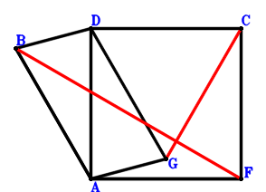
\(\because \) FADC is a parallelogram \(\therefore \small\overrightarrow{AD}=\small\overrightarrow{AC} - \small\overrightarrow{AF}\).\(\because \) BDGA is a parallelogram \(\therefore \small\overrightarrow{AG}=- \small\overrightarrow{AB} + \small\overrightarrow{AC} - \small\overrightarrow{AF}\).\(\because \) BA=FA \( \therefore\small\overrightarrow{AB}^{2} - \small\overrightarrow{AF}^{2}=0.\)In conclusion, \(\small\overrightarrow{CG} \cdot \small\overrightarrow{FB}=\left(\small\overrightarrow{AB} - \small\overrightarrow{AF}\right) \cdot \left(- \small\overrightarrow{AC} + \small\overrightarrow{AG}\right)=\left(- \small\overrightarrow{AB} - \small\overrightarrow{AF}\right) \cdot \left(\small\overrightarrow{AB} - \small\overrightarrow{AF}\right)=- \small\overrightarrow{AB}^{2} + \small\overrightarrow{AF}^{2}=0\), that is, CG⊥BF.
Exercise 74： Let DGBH be a trapezoid with HB//DG and HB=2DG. D, G are the midpoints of CF, CA, respectively. BA=FA. Prove that HA⊥BF.
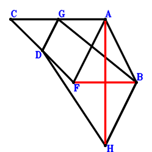
\(\because \) D is the midpoint of CF \(\therefore \small\overrightarrow{AD}=\dfrac{\small\overrightarrow{AC}}{2} + \dfrac{\small\overrightarrow{AF}}{2}\).\(\because \) G is the midpoint of CA \(\therefore \small\overrightarrow{AG}=\dfrac{\small\overrightarrow{AC}}{2}\).\(\because \) HB//DG and HB=2DG \(\therefore \small\overrightarrow{AH}=\small\overrightarrow{AB} - \small\overrightarrow{AC} + 2 \small\overrightarrow{AD}=\small\overrightarrow{AB} + \small\overrightarrow{AF}\).\(\because \) BA=FA \( \therefore\small\overrightarrow{AB}^{2} - \small\overrightarrow{AF}^{2}=0.\)In conclusion, \(\small\overrightarrow{FB} \cdot \small\overrightarrow{HA}=- \small\overrightarrow{AH} \cdot \left(\small\overrightarrow{AB} - \small\overrightarrow{AF}\right)=- \left(\small\overrightarrow{AB} - \small\overrightarrow{AF}\right) \cdot \left(\small\overrightarrow{AB} + \small\overrightarrow{AF}\right)=- \small\overrightarrow{AB}^{2} + \small\overrightarrow{AF}^{2}=0\), that is, HA⊥BF.
Exercise 82： Let H, G, C be collinear and HC=3HG. D, G, B are collinear and GB=2DG. D is the midpoint of FC. AB=FA. Prove that AH⊥FB.
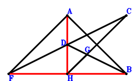
\(\because \) D is the midpoint of FC \(\therefore \small\overrightarrow{BD}=\dfrac{\small\overrightarrow{BC}}{2} + \dfrac{\small\overrightarrow{BF}}{2}\).\(\because \) D, G, B are collinear and GB=2DG \(\therefore \small\overrightarrow{BG}=\dfrac{2 \small\overrightarrow{BD}}{3}=\dfrac{\small\overrightarrow{BC}}{3} + \dfrac{\small\overrightarrow{BF}}{3}\).\(\because \) H, G, C are collinear and HC=3HG \(\therefore \small\overrightarrow{BH}=- \dfrac{\small\overrightarrow{BC}}{2} + \dfrac{3 \small\overrightarrow{BG}}{2}=\dfrac{\small\overrightarrow{BF}}{2}\).\(\because \) AB=FA \( \therefore\small\overrightarrow{BA}^{2} - \small\overrightarrow{FA}^{2}=\small\overrightarrow{BA}^{2} - \left(\small\overrightarrow{BA} - \small\overrightarrow{BF}\right)^{2}=2 \small\overrightarrow{BA} \cdot \small\overrightarrow{BF} - \small\overrightarrow{BF}^{2}=0.\)In conclusion, \(\small\overrightarrow{FB} \cdot \small\overrightarrow{HA}=- \small\overrightarrow{BF} \cdot \left(\small\overrightarrow{BA} - \small\overrightarrow{BH}\right)=- \small\overrightarrow{BF} \cdot \left(\small\overrightarrow{BA} - \dfrac{\small\overrightarrow{BF}}{2}\right)=- \small\overrightarrow{BA} \cdot \small\overrightarrow{BF} + \dfrac{\small\overrightarrow{BF}^{2}}{2}=0\), that is, AH⊥FB.
Exercise 95： Let A be the midpoint of DB. G is the midpoint of FH and DC. AB=FA. Prove that HC⊥FB.
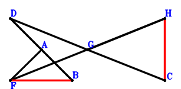
\(\because \) A is the midpoint of DB \(\therefore \small\overrightarrow{BD}=2 \small\overrightarrow{BA}\).\(\because \) G is the midpoint of DC \(\therefore \small\overrightarrow{BG}=\dfrac{\small\overrightarrow{BC}}{2} + \dfrac{\small\overrightarrow{BD}}{2}=\small\overrightarrow{BA} + \dfrac{\small\overrightarrow{BC}}{2}\).\(\because \) G is the midpoint of FH \(\therefore \small\overrightarrow{BH}=- \small\overrightarrow{BF} + 2 \small\overrightarrow{BG}=2 \small\overrightarrow{BA} + \small\overrightarrow{BC} - \small\overrightarrow{BF}\).\(\because \) AB=FA \( \therefore\small\overrightarrow{BA}^{2} - \small\overrightarrow{FA}^{2}=\small\overrightarrow{BA}^{2} - \left(\small\overrightarrow{BA} - \small\overrightarrow{BF}\right)^{2}=2 \small\overrightarrow{BA} \cdot \small\overrightarrow{BF} - \small\overrightarrow{BF}^{2}=0.\)In conclusion, \(\small\overrightarrow{CH} \cdot \small\overrightarrow{FB}=- \small\overrightarrow{BF} \cdot \left(- \small\overrightarrow{BC} + \small\overrightarrow{BH}\right)=- \small\overrightarrow{BF} \cdot \left(2 \small\overrightarrow{BA} - \small\overrightarrow{BF}\right)=- 2 \small\overrightarrow{BA} \cdot \small\overrightarrow{BF} + \small\overrightarrow{BF}^{2}=0\), that is, HC⊥FB.
Exercise 108： Let DCGB be a parallelogram. A is the midpoint of DF. BA=AF. Prove that BF⊥CG.
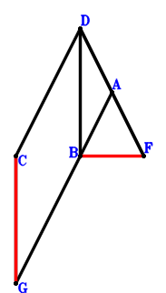
\(\because \) A is the midpoint of DF \(\therefore \small\overrightarrow{BD}=2 \small\overrightarrow{BA} - \small\overrightarrow{BF}\).\(\because \) DCGB is a parallelogram \(\therefore \small\overrightarrow{BG}=\small\overrightarrow{BC} - \small\overrightarrow{BD}=- 2 \small\overrightarrow{BA} + \small\overrightarrow{BC} + \small\overrightarrow{BF}\).\(\because \) BA=AF \( \therefore\small\overrightarrow{BA}^{2} - \small\overrightarrow{FA}^{2}=\small\overrightarrow{BA}^{2} - \left(\small\overrightarrow{BA} - \small\overrightarrow{BF}\right)^{2}=2 \small\overrightarrow{BA} \cdot \small\overrightarrow{BF} - \small\overrightarrow{BF}^{2}=0.\)In conclusion, \(\small\overrightarrow{FB} \cdot \small\overrightarrow{GC}=- \small\overrightarrow{BF} \cdot \left(\small\overrightarrow{BC} - \small\overrightarrow{BG}\right)=- \small\overrightarrow{BF} \cdot \left(2 \small\overrightarrow{BA} - \small\overrightarrow{BF}\right)=- 2 \small\overrightarrow{BA} \cdot \small\overrightarrow{BF} + \small\overrightarrow{BF}^{2}=0\), that is, BF⊥CG.
Exercise 116： Let AFCG be a trapezoid with FC//AG and FC=2AG. D is the midpoint of CB. AB=FA. Prove that FB⊥GD.
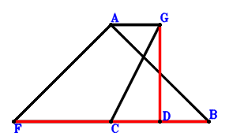
\(\because \) D is the midpoint of CB \(\therefore \small\overrightarrow{BD}=\dfrac{\small\overrightarrow{BC}}{2}\).\(\because \) FC//AG and FC=2AG \(\therefore \small\overrightarrow{BG}=\small\overrightarrow{BA} + \dfrac{\small\overrightarrow{BC}}{2} - \dfrac{\small\overrightarrow{BF}}{2}\).\(\because \) AB=FA \( \therefore\small\overrightarrow{BA}^{2} - \small\overrightarrow{FA}^{2}=\small\overrightarrow{BA}^{2} - \left(\small\overrightarrow{BA} - \small\overrightarrow{BF}\right)^{2}=2 \small\overrightarrow{BA} \cdot \small\overrightarrow{BF} - \small\overrightarrow{BF}^{2}=0.\)In conclusion, \(\small\overrightarrow{DG} \cdot \small\overrightarrow{FB}=- \small\overrightarrow{BF} \cdot \left(- \small\overrightarrow{BD} + \small\overrightarrow{BG}\right)=- \small\overrightarrow{BF} \cdot \left(\small\overrightarrow{BA} - \dfrac{\small\overrightarrow{BF}}{2}\right)=- \small\overrightarrow{BA} \cdot \small\overrightarrow{BF} + \dfrac{\small\overrightarrow{BF}^{2}}{2}=0\), that is, FB⊥GD.
Exercise 119： Let ABCD be a trapezoid with BC//AD and BC=2AD. D is the midpoint of FG. AB=FA. Prove that CG⊥FB.
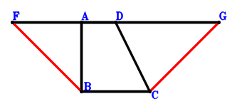
\(\because \) BC//AD and BC=2AD \(\therefore \small\overrightarrow{BD}=\small\overrightarrow{BA} + \dfrac{\small\overrightarrow{BC}}{2}\).\(\because \) D is the midpoint of FG \(\therefore \small\overrightarrow{BG}=2 \small\overrightarrow{BD} - \small\overrightarrow{BF}=2 \small\overrightarrow{BA} + \small\overrightarrow{BC} - \small\overrightarrow{BF}\).\(\because \) AB=FA \( \therefore\small\overrightarrow{BA}^{2} - \small\overrightarrow{FA}^{2}=\small\overrightarrow{BA}^{2} - \left(\small\overrightarrow{BA} - \small\overrightarrow{BF}\right)^{2}=2 \small\overrightarrow{BA} \cdot \small\overrightarrow{BF} - \small\overrightarrow{BF}^{2}=0.\)In conclusion, \(\small\overrightarrow{CG} \cdot \small\overrightarrow{FB}=- \small\overrightarrow{BF} \cdot \left(- \small\overrightarrow{BC} + \small\overrightarrow{BG}\right)=- \small\overrightarrow{BF} \cdot \left(2 \small\overrightarrow{BA} - \small\overrightarrow{BF}\right)=- 2 \small\overrightarrow{BA} \cdot \small\overrightarrow{BF} + \small\overrightarrow{BF}^{2}=0\), that is, CG⊥FB.
Exercise 135： Let DBAC be a parallelogram. G is the midpoint of DH and CA. BA=AF. Prove that BF⊥FH.
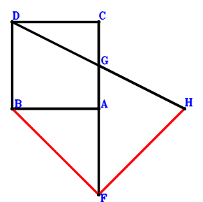
\(\because \) DBAC is a parallelogram \(\therefore \small\overrightarrow{AD}=\small\overrightarrow{AB} + \small\overrightarrow{AC}\).\(\because \) G is the midpoint of CA \(\therefore \small\overrightarrow{AG}=\dfrac{\small\overrightarrow{AC}}{2}\).\(\because \) G is the midpoint of DH \(\therefore \small\overrightarrow{AH}=\small\overrightarrow{AC} - \small\overrightarrow{AD}=- \small\overrightarrow{AB}\).\(\because \) BA=AF \( \therefore\small\overrightarrow{AB}^{2} - \small\overrightarrow{AF}^{2}=0.\)In conclusion, \(\small\overrightarrow{FB} \cdot \small\overrightarrow{FH}=\left(\small\overrightarrow{AB} - \small\overrightarrow{AF}\right) \cdot \left(- \small\overrightarrow{AF} + \small\overrightarrow{AH}\right)=\left(- \small\overrightarrow{AB} - \small\overrightarrow{AF}\right) \cdot \left(\small\overrightarrow{AB} - \small\overrightarrow{AF}\right)=- \small\overrightarrow{AB}^{2} + \small\overrightarrow{AF}^{2}=0\), that is, BF⊥FH.
Exercise 145： Let D be the midpoint of FG and AC. H is the midpoint of AG and IC. AB=FA. Prove that FB⊥BI.
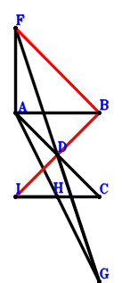
\(\because \) D is the midpoint of AC \(\therefore \small\overrightarrow{AD}=\dfrac{\small\overrightarrow{AC}}{2}\).\(\because \) D is the midpoint of FG \(\therefore \small\overrightarrow{AG}=2 \small\overrightarrow{AD} - \small\overrightarrow{AF}=\small\overrightarrow{AC} - \small\overrightarrow{AF}\).\(\because \) H is the midpoint of AG \(\therefore \small\overrightarrow{AH}=\dfrac{\small\overrightarrow{AG}}{2}=\dfrac{\small\overrightarrow{AC}}{2} - \dfrac{\small\overrightarrow{AF}}{2}\).\(\because \) H is the midpoint of IC \(\therefore \small\overrightarrow{AI}=- \small\overrightarrow{AC} + 2 \small\overrightarrow{AH}=- \small\overrightarrow{AF}\).\(\because \) AB=FA \( \therefore\small\overrightarrow{AB}^{2} - \small\overrightarrow{AF}^{2}=0.\)In conclusion, \(\small\overrightarrow{BI} \cdot \small\overrightarrow{FB}=\left(- \small\overrightarrow{AB} + \small\overrightarrow{AI}\right) \cdot \left(\small\overrightarrow{AB} - \small\overrightarrow{AF}\right)=\left(- \small\overrightarrow{AB} - \small\overrightarrow{AF}\right) \cdot \left(\small\overrightarrow{AB} - \small\overrightarrow{AF}\right)=- \small\overrightarrow{AB}^{2} + \small\overrightarrow{AF}^{2}=0\), that is, FB⊥BI.
Exercise 150： Let FCDA be a trapezoid with FC//AD and FC=2AD. D is the midpoint of CG. AB=FA. Prove that FB⊥BG.
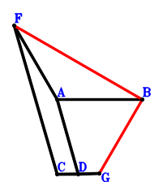
\(\because \) FC//AD and FC=2AD \(\therefore \small\overrightarrow{BD}=\small\overrightarrow{BA} + \dfrac{\small\overrightarrow{BC}}{2} - \dfrac{\small\overrightarrow{BF}}{2}\).\(\because \) D is the midpoint of CG \(\therefore \small\overrightarrow{BG}=- \small\overrightarrow{BC} + 2 \small\overrightarrow{BD}=2 \small\overrightarrow{BA} - \small\overrightarrow{BF}\).\(\because \) AB=FA \( \therefore\small\overrightarrow{BA}^{2} - \small\overrightarrow{FA}^{2}=\small\overrightarrow{BA}^{2} - \left(\small\overrightarrow{BA} - \small\overrightarrow{BF}\right)^{2}=2 \small\overrightarrow{BA} \cdot \small\overrightarrow{BF} - \small\overrightarrow{BF}^{2}=0.\)In conclusion, \(- \small\overrightarrow{BF} \cdot \small\overrightarrow{BG}=- \small\overrightarrow{BF} \cdot \left(2 \small\overrightarrow{BA} - \small\overrightarrow{BF}\right)=- 2 \small\overrightarrow{BA} \cdot \small\overrightarrow{BF} + \small\overrightarrow{BF}^{2}=0\), that is, FB⊥BG.
Exercise 153： Let GAFD be a trapezoid with AF//GD and AF=2GD. D, G are the midpoints of AC, HC, respectively. AB=AF. Prove that HB⊥BF.
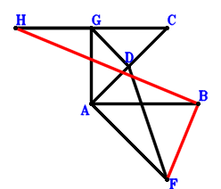
\(\because \) D is the midpoint of AC \(\therefore \small\overrightarrow{AD}=\dfrac{\small\overrightarrow{AC}}{2}\).\(\because \) AF//GD and AF=2GD \(\therefore \small\overrightarrow{AG}=\dfrac{\small\overrightarrow{AC}}{2} - \dfrac{\small\overrightarrow{AF}}{2}\).\(\because \) G is the midpoint of HC \(\therefore \small\overrightarrow{AH}=- \small\overrightarrow{AC} + 2 \small\overrightarrow{AG}=- \small\overrightarrow{AF}\).\(\because \) AB=AF \( \therefore\small\overrightarrow{AB}^{2} - \small\overrightarrow{AF}^{2}=0.\)In conclusion, \(\small\overrightarrow{BH} \cdot \small\overrightarrow{FB}=\left(- \small\overrightarrow{AB} + \small\overrightarrow{AH}\right) \cdot \left(\small\overrightarrow{AB} - \small\overrightarrow{AF}\right)=\left(- \small\overrightarrow{AB} - \small\overrightarrow{AF}\right) \cdot \left(\small\overrightarrow{AB} - \small\overrightarrow{AF}\right)=- \small\overrightarrow{AB}^{2} + \small\overrightarrow{AF}^{2}=0\), that is, HB⊥BF.
Exercise 156： Let FABD and EGAF be parallelograms. AD⊥FB. Given that FA//EG, prove that \(AB^{2}=EG \cdot FA\).
Exercise 202： Let GCFA and AFEI be parallelograms. H, D are the midpoints of GA, CB, respectively. FB⊥HD. Given that FA//EI, prove that \(AB^{2}=EI \cdot FA\).
\(\because \) D is the midpoint of CB \(\therefore \small\overrightarrow{AD}=\dfrac{\small\overrightarrow{AB}}{2} + \dfrac{\small\overrightarrow{AC}}{2}\).\(\because \) GCFA is a parallelogram \(\therefore \small\overrightarrow{AG}=\small\overrightarrow{AC} - \small\overrightarrow{AF}\).\(\because \) H is the midpoint of GA \(\therefore \small\overrightarrow{AH}=\dfrac{\small\overrightarrow{AG}}{2}=\dfrac{\small\overrightarrow{AC}}{2} - \dfrac{\small\overrightarrow{AF}}{2}\).\(\because \) AFEI is a parallelogram \(\therefore \small\overrightarrow{AI}=\small\overrightarrow{AE} - \small\overrightarrow{AF}\).\(\because \) FB⊥HD \( \therefore\small\overrightarrow{DH} \cdot \small\overrightarrow{FB}=\left(\small\overrightarrow{AB} - \small\overrightarrow{AF}\right) \cdot \left(- \small\overrightarrow{AD} + \small\overrightarrow{AH}\right)=\left(- \dfrac{\small\overrightarrow{AB}}{2} - \dfrac{\small\overrightarrow{AF}}{2}\right) \cdot \left(\small\overrightarrow{AB} - \small\overrightarrow{AF}\right)=- \dfrac{\small\overrightarrow{AB}^{2}}{2} + \dfrac{\small\overrightarrow{AF}^{2}}{2}=0.\)In conclusion, \(\small\overrightarrow{BA}^{2} + \small\overrightarrow{FA} \cdot \small\overrightarrow{IE}=\small\overrightarrow{AB}^{2} - \small\overrightarrow{AF} \cdot \left(\small\overrightarrow{AE} - \small\overrightarrow{AI}\right)=\small\overrightarrow{AB}^{2} - \small\overrightarrow{AF}^{2}=0\)\(\because\) FA//EI \(\therefore\) \(AB^{2}=EI \cdot FA\).
Exercise 214： Let FEIA and HFAG be parallelograms. D is the midpoint of AG and CB. FB⊥CH. Given that FA//EI, prove that \(AB^{2}=EI \cdot FA\).
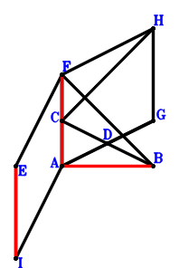
\(\because \) D is the midpoint of CB \(\therefore \small\overrightarrow{AD}=\dfrac{\small\overrightarrow{AB}}{2} + \dfrac{\small\overrightarrow{AC}}{2}\).\(\because \) D is the midpoint of AG \(\therefore \small\overrightarrow{AG}=2 \small\overrightarrow{AD}=\small\overrightarrow{AB} + \small\overrightarrow{AC}\).\(\because \) HFAG is a parallelogram \(\therefore \small\overrightarrow{AH}=\small\overrightarrow{AB} + \small\overrightarrow{AC} + \small\overrightarrow{AF}\).\(\because \) FEIA is a parallelogram \(\therefore \small\overrightarrow{AI}=\small\overrightarrow{AE} - \small\overrightarrow{AF}\).\(\because \) FB⊥CH \( \therefore\small\overrightarrow{FB} \cdot \small\overrightarrow{HC}=\left(\small\overrightarrow{AB} - \small\overrightarrow{AF}\right) \cdot \left(\small\overrightarrow{AC} - \small\overrightarrow{AH}\right)=\left(- \small\overrightarrow{AB} - \small\overrightarrow{AF}\right) \cdot \left(\small\overrightarrow{AB} - \small\overrightarrow{AF}\right)=- \small\overrightarrow{AB}^{2} + \small\overrightarrow{AF}^{2}=0.\)In conclusion, \(\small\overrightarrow{BA}^{2} + \small\overrightarrow{FA} \cdot \small\overrightarrow{IE}=\small\overrightarrow{AB}^{2} - \small\overrightarrow{AF} \cdot \left(\small\overrightarrow{AE} - \small\overrightarrow{AI}\right)=\small\overrightarrow{AB}^{2} - \small\overrightarrow{AF}^{2}=0\)\(\because\) FA//EI \(\therefore\) \(AB^{2}=EI \cdot FA\).
Exercise 222： Let DBAF, GDAC and FAHE be parallelograms. BF⊥GC. Given that FA//EH, prove that \(BA^{2}=EH \cdot FA\).
Exercise 271： Let HEFA be a parallelogram. AFCG is a trapezoid with FC//AG and FC=2AG. D is the midpoint of BC. BF⊥GD. Given that AF//HE, prove that \(AB^{2}=AF \cdot HE\).
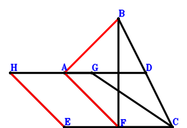
\(\because \) D is the midpoint of BC \(\therefore \small\overrightarrow{FD}=\dfrac{\small\overrightarrow{FB}}{2} + \dfrac{\small\overrightarrow{FC}}{2}\).\(\because \) FC//AG and FC=2AG \(\therefore \small\overrightarrow{FG}=\small\overrightarrow{FA} + \dfrac{\small\overrightarrow{FC}}{2}\).\(\because \) HEFA is a parallelogram \(\therefore \small\overrightarrow{FH}=\small\overrightarrow{FA} + \small\overrightarrow{FE}\).\(\because \) BF⊥GD \( \therefore\small\overrightarrow{DG} \cdot \small\overrightarrow{FB}=\small\overrightarrow{FB} \cdot \left(- \small\overrightarrow{FD} + \small\overrightarrow{FG}\right)=\small\overrightarrow{FB} \cdot \left(\small\overrightarrow{FA} - \dfrac{\small\overrightarrow{FB}}{2}\right)=\small\overrightarrow{FA} \cdot \small\overrightarrow{FB} - \dfrac{\small\overrightarrow{FB}^{2}}{2}=0.\)In conclusion, \(\small\overrightarrow{BA}^{2} + \small\overrightarrow{FA} \cdot \small\overrightarrow{HE}=\small\overrightarrow{FA} \cdot \left(\small\overrightarrow{FE} - \small\overrightarrow{FH}\right) + \left(\small\overrightarrow{FA} - \small\overrightarrow{FB}\right)^{2}=- \small\overrightarrow{FA}^{2} + \left(\small\overrightarrow{FA} - \small\overrightarrow{FB}\right)^{2}=- 2 \small\overrightarrow{FA} \cdot \small\overrightarrow{FB} + \small\overrightarrow{FB}^{2}=0\)\(\because\) AF//HE \(\therefore\) \(AB^{2}=AF \cdot HE\).
Exercise 274： Let HEFA be a parallelogram. BADC is a trapezoid with CB//DA and CB=2DA. D is the midpoint of GF. GC⊥BF. Given that AF//HE, prove that \(AB^{2}=AF \cdot HE\).
Exercise 290： Let FEIA and DBAC be parallelograms. G is the midpoint of CA and DH. BF⊥FH. Given that FA//EI, prove that \(BA^{2}=EI \cdot FA\).
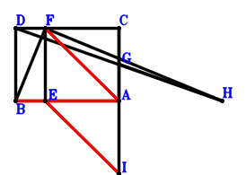
\(\because \) DBAC is a parallelogram \(\therefore \small\overrightarrow{AD}=\small\overrightarrow{AB} + \small\overrightarrow{AC}\).\(\because \) G is the midpoint of CA \(\therefore \small\overrightarrow{AG}=\dfrac{\small\overrightarrow{AC}}{2}\).\(\because \) G is the midpoint of DH \(\therefore \small\overrightarrow{AH}=\small\overrightarrow{AC} - \small\overrightarrow{AD}=- \small\overrightarrow{AB}\).\(\because \) FEIA is a parallelogram \(\therefore \small\overrightarrow{AI}=\small\overrightarrow{AE} - \small\overrightarrow{AF}\).\(\because \) BF⊥FH \( \therefore\small\overrightarrow{FB} \cdot \small\overrightarrow{FH}=\left(\small\overrightarrow{AB} - \small\overrightarrow{AF}\right) \cdot \left(- \small\overrightarrow{AF} + \small\overrightarrow{AH}\right)=\left(- \small\overrightarrow{AB} - \small\overrightarrow{AF}\right) \cdot \left(\small\overrightarrow{AB} - \small\overrightarrow{AF}\right)=- \small\overrightarrow{AB}^{2} + \small\overrightarrow{AF}^{2}=0.\)In conclusion, \(\small\overrightarrow{BA}^{2} + \small\overrightarrow{FA} \cdot \small\overrightarrow{IE}=\small\overrightarrow{AB}^{2} - \small\overrightarrow{AF} \cdot \left(\small\overrightarrow{AE} - \small\overrightarrow{AI}\right)=\small\overrightarrow{AB}^{2} - \small\overrightarrow{AF}^{2}=0\)\(\because\) FA//EI \(\therefore\) \(BA^{2}=EI \cdot FA\).
Exercise 335： Let IEAF and DFAC be parallelograms. G is the midpoint of CA and HB. HD⊥FB. Given that IE//FA, prove that \(AB^{2}=FA \cdot IE\).
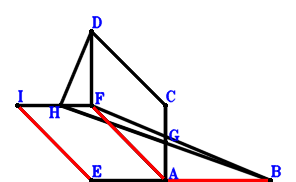
\(\because \) DFAC is a parallelogram \(\therefore \small\overrightarrow{AD}=\small\overrightarrow{AC} + \small\overrightarrow{AF}\).\(\because \) G is the midpoint of CA \(\therefore \small\overrightarrow{AG}=\dfrac{\small\overrightarrow{AC}}{2}\).\(\because \) G is the midpoint of HB \(\therefore \small\overrightarrow{AH}=- \small\overrightarrow{AB} + 2 \small\overrightarrow{AG}=- \small\overrightarrow{AB} + \small\overrightarrow{AC}\).\(\because \) IEAF is a parallelogram \(\therefore \small\overrightarrow{AI}=\small\overrightarrow{AE} + \small\overrightarrow{AF}\).\(\because \) HD⊥FB \( \therefore\small\overrightarrow{DH} \cdot \small\overrightarrow{FB}=\left(\small\overrightarrow{AB} - \small\overrightarrow{AF}\right) \cdot \left(- \small\overrightarrow{AD} + \small\overrightarrow{AH}\right)=\left(- \small\overrightarrow{AB} - \small\overrightarrow{AF}\right) \cdot \left(\small\overrightarrow{AB} - \small\overrightarrow{AF}\right)=- \small\overrightarrow{AB}^{2} + \small\overrightarrow{AF}^{2}=0.\)In conclusion, \(\small\overrightarrow{BA}^{2} + \small\overrightarrow{EI} \cdot \small\overrightarrow{FA}=\small\overrightarrow{AB}^{2} - \small\overrightarrow{AF} \cdot \left(- \small\overrightarrow{AE} + \small\overrightarrow{AI}\right)=\small\overrightarrow{AB}^{2} - \small\overrightarrow{AF}^{2}=0\)\(\because\) IE//FA \(\therefore\) \(AB^{2}=FA \cdot IE\).
Exercise 349： Let IEAF be a parallelogram. GDAC is a trapezoid with CA//GD and CA=2GD. G, D are the midpoints of HA, BF, respectively. BF⊥HC. Given that IE//FA, prove that \(BA^{2}=FA \cdot IE\).
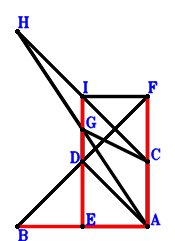
\(\because \) D is the midpoint of BF \(\therefore \small\overrightarrow{AD}=\dfrac{\small\overrightarrow{AB}}{2} + \dfrac{\small\overrightarrow{AF}}{2}\).\(\because \) CA//GD and CA=2GD \(\therefore \small\overrightarrow{AG}=\dfrac{\small\overrightarrow{AB}}{2} + \dfrac{\small\overrightarrow{AC}}{2} + \dfrac{\small\overrightarrow{AF}}{2}\).\(\because \) G is the midpoint of HA \(\therefore \small\overrightarrow{AH}=2 \small\overrightarrow{AG}=\small\overrightarrow{AB} + \small\overrightarrow{AC} + \small\overrightarrow{AF}\).\(\because \) IEAF is a parallelogram \(\therefore \small\overrightarrow{AI}=\small\overrightarrow{AE} + \small\overrightarrow{AF}\).\(\because \) BF⊥HC \( \therefore\small\overrightarrow{FB} \cdot \small\overrightarrow{HC}=\left(\small\overrightarrow{AB} - \small\overrightarrow{AF}\right) \cdot \left(\small\overrightarrow{AC} - \small\overrightarrow{AH}\right)=\left(- \small\overrightarrow{AB} - \small\overrightarrow{AF}\right) \cdot \left(\small\overrightarrow{AB} - \small\overrightarrow{AF}\right)=- \small\overrightarrow{AB}^{2} + \small\overrightarrow{AF}^{2}=0.\)In conclusion, \(\small\overrightarrow{BA}^{2} + \small\overrightarrow{EI} \cdot \small\overrightarrow{FA}=\small\overrightarrow{AB}^{2} - \small\overrightarrow{AF} \cdot \left(- \small\overrightarrow{AE} + \small\overrightarrow{AI}\right)=\small\overrightarrow{AB}^{2} - \small\overrightarrow{AF}^{2}=0\)\(\because\) IE//FA \(\therefore\) \(BA^{2}=FA \cdot IE\).
Exercise 388： Let AFGE be a parallelogram. D is the midpoint of BF. AD⊥BF. Given that EG//AF, prove that \(BA^{2}=AF \cdot EG\).
Exercise 413： Let GFAE be a parallelogram. A, D are the orthocenter and circumcenter of △CFB. BF⊥DC. Given that GE//FA, prove that \(BA^{2}=FA \cdot GE\).
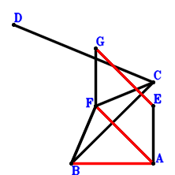
\(\because \) A, D are the orthocenter and circumcenter of △CFB \(\therefore \small\overrightarrow{AD}=\small\overrightarrow{AB} + \small\overrightarrow{AC} + \small\overrightarrow{AF}\).\(\because \) GFAE is a parallelogram \(\therefore \small\overrightarrow{AG}=\small\overrightarrow{AE} + \small\overrightarrow{AF}\).\(\because \) BF⊥DC \( \therefore\small\overrightarrow{DC} \cdot \small\overrightarrow{FB}=\left(\small\overrightarrow{AB} - \small\overrightarrow{AF}\right) \cdot \left(\small\overrightarrow{AC} - \small\overrightarrow{AD}\right)=\left(- \small\overrightarrow{AB} - \small\overrightarrow{AF}\right) \cdot \left(\small\overrightarrow{AB} - \small\overrightarrow{AF}\right)=- \small\overrightarrow{AB}^{2} + \small\overrightarrow{AF}^{2}=0.\)In conclusion, \(\small\overrightarrow{BA}^{2} + \small\overrightarrow{EG} \cdot \small\overrightarrow{FA}=\small\overrightarrow{AB}^{2} - \small\overrightarrow{AF} \cdot \left(- \small\overrightarrow{AE} + \small\overrightarrow{AG}\right)=\small\overrightarrow{AB}^{2} - \small\overrightarrow{AF}^{2}=0\)\(\because\) GE//FA \(\therefore\) \(BA^{2}=FA \cdot GE\).
Exercise 432： Let AEGF be a parallelogram. A is the midpoint of DF. DB⊥BF. Given that EG//AF, prove that \(BA^{2}=AF \cdot EG\).
Exercise 460： Let AEHF be a parallelogram. AFCD is a trapezoid with FC//AD and FC=2AD. D is the midpoint of GC. GB⊥BF. Given that EH//AF, prove that \(BA^{2}=AF \cdot EH\).
Exercise 489： Let DCAF be a parallelogram. G is the midpoint of DB and CH. I is the midpoint of EA and JF. AH⊥FB. Given that FA//EJ, prove that \(AB^{2}=EJ \cdot FA\).
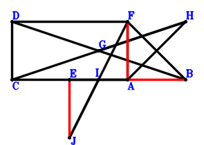
\(\because \) DCAF is a parallelogram \(\therefore \small\overrightarrow{AD}=\small\overrightarrow{AC} + \small\overrightarrow{AF}\).\(\because \) G is the midpoint of DB \(\therefore \small\overrightarrow{AG}=\dfrac{\small\overrightarrow{AB}}{2} + \dfrac{\small\overrightarrow{AD}}{2}=\dfrac{\small\overrightarrow{AB}}{2} + \dfrac{\small\overrightarrow{AC}}{2} + \dfrac{\small\overrightarrow{AF}}{2}\).\(\because \) G is the midpoint of CH \(\therefore \small\overrightarrow{AH}=- \small\overrightarrow{AC} + 2 \small\overrightarrow{AG}=\small\overrightarrow{AB} + \small\overrightarrow{AF}\).\(\because \) I is the midpoint of EA \(\therefore \small\overrightarrow{AI}=\dfrac{\small\overrightarrow{AE}}{2}\).\(\because \) I is the midpoint of JF \(\therefore \small\overrightarrow{AJ}=- \small\overrightarrow{AF} + 2 \small\overrightarrow{AI}=\small\overrightarrow{AE} - \small\overrightarrow{AF}\).\(\because \) AH⊥FB \( \therefore\small\overrightarrow{FB} \cdot \small\overrightarrow{HA}=- \small\overrightarrow{AH} \cdot \left(\small\overrightarrow{AB} - \small\overrightarrow{AF}\right)=- \left(\small\overrightarrow{AB} - \small\overrightarrow{AF}\right) \cdot \left(\small\overrightarrow{AB} + \small\overrightarrow{AF}\right)=- \small\overrightarrow{AB}^{2} + \small\overrightarrow{AF}^{2}=0.\)In conclusion, \(\small\overrightarrow{BA}^{2} + \small\overrightarrow{FA} \cdot \small\overrightarrow{JE}=\small\overrightarrow{AB}^{2} - \small\overrightarrow{AF} \cdot \left(\small\overrightarrow{AE} - \small\overrightarrow{AJ}\right)=\small\overrightarrow{AB}^{2} - \small\overrightarrow{AF}^{2}=0\)\(\because\) FA//EJ \(\therefore\) \(AB^{2}=EJ \cdot FA\).
Exercise 542： Let HGFA be a trapezoid with FA//GH and FA=2GH. G, D are the midpoints of CA, CB, respectively. I is the midpoint of AE and FJ. FB⊥HD. Given that FA//EJ, prove that \(AB^{2}=EJ \cdot FA\).
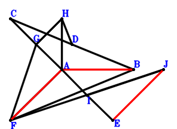
\(\because \) D is the midpoint of CB \(\therefore \small\overrightarrow{AD}=\dfrac{\small\overrightarrow{AB}}{2} + \dfrac{\small\overrightarrow{AC}}{2}\).\(\because \) G is the midpoint of CA \(\therefore \small\overrightarrow{AG}=\dfrac{\small\overrightarrow{AC}}{2}\).\(\because \) FA//GH and FA=2GH \(\therefore \small\overrightarrow{AH}=\dfrac{\small\overrightarrow{AC}}{2} - \dfrac{\small\overrightarrow{AF}}{2}\).\(\because \) I is the midpoint of AE \(\therefore \small\overrightarrow{AI}=\dfrac{\small\overrightarrow{AE}}{2}\).\(\because \) I is the midpoint of FJ \(\therefore \small\overrightarrow{AJ}=- \small\overrightarrow{AF} + 2 \small\overrightarrow{AI}=\small\overrightarrow{AE} - \small\overrightarrow{AF}\).\(\because \) FB⊥HD \( \therefore\small\overrightarrow{DH} \cdot \small\overrightarrow{FB}=\left(\small\overrightarrow{AB} - \small\overrightarrow{AF}\right) \cdot \left(- \small\overrightarrow{AD} + \small\overrightarrow{AH}\right)=\left(- \dfrac{\small\overrightarrow{AB}}{2} - \dfrac{\small\overrightarrow{AF}}{2}\right) \cdot \left(\small\overrightarrow{AB} - \small\overrightarrow{AF}\right)=- \dfrac{\small\overrightarrow{AB}^{2}}{2} + \dfrac{\small\overrightarrow{AF}^{2}}{2}=0.\)In conclusion, \(\small\overrightarrow{BA}^{2} + \small\overrightarrow{FA} \cdot \small\overrightarrow{JE}=\small\overrightarrow{AB}^{2} - \small\overrightarrow{AF} \cdot \left(\small\overrightarrow{AE} - \small\overrightarrow{AJ}\right)=\small\overrightarrow{AB}^{2} - \small\overrightarrow{AF}^{2}=0\)\(\because\) FA//EJ \(\therefore\) \(AB^{2}=EJ \cdot FA\).
Exercise 603： Let DCFA be a parallelogram. G is the midpoint of CH and DA. I is the midpoint of AE and FJ. FB⊥BH. Given that FA//EJ, prove that \(AB^{2}=EJ \cdot FA\).
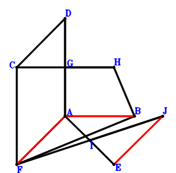
\(\because \) DCFA is a parallelogram \(\therefore \small\overrightarrow{AD}=\small\overrightarrow{AC} - \small\overrightarrow{AF}\).\(\because \) G is the midpoint of DA \(\therefore \small\overrightarrow{AG}=\dfrac{\small\overrightarrow{AD}}{2}=\dfrac{\small\overrightarrow{AC}}{2} - \dfrac{\small\overrightarrow{AF}}{2}\).\(\because \) G is the midpoint of CH \(\therefore \small\overrightarrow{AH}=- \small\overrightarrow{AC} + 2 \small\overrightarrow{AG}=- \small\overrightarrow{AF}\).\(\because \) I is the midpoint of AE \(\therefore \small\overrightarrow{AI}=\dfrac{\small\overrightarrow{AE}}{2}\).\(\because \) I is the midpoint of FJ \(\therefore \small\overrightarrow{AJ}=- \small\overrightarrow{AF} + 2 \small\overrightarrow{AI}=\small\overrightarrow{AE} - \small\overrightarrow{AF}\).\(\because \) FB⊥BH \( \therefore\small\overrightarrow{BH} \cdot \small\overrightarrow{FB}=\left(- \small\overrightarrow{AB} + \small\overrightarrow{AH}\right) \cdot \left(\small\overrightarrow{AB} - \small\overrightarrow{AF}\right)=\left(- \small\overrightarrow{AB} - \small\overrightarrow{AF}\right) \cdot \left(\small\overrightarrow{AB} - \small\overrightarrow{AF}\right)=- \small\overrightarrow{AB}^{2} + \small\overrightarrow{AF}^{2}=0.\)In conclusion, \(\small\overrightarrow{BA}^{2} + \small\overrightarrow{FA} \cdot \small\overrightarrow{JE}=\small\overrightarrow{AB}^{2} - \small\overrightarrow{AF} \cdot \left(\small\overrightarrow{AE} - \small\overrightarrow{AJ}\right)=\small\overrightarrow{AB}^{2} - \small\overrightarrow{AF}^{2}=0\)\(\because\) FA//EJ \(\therefore\) \(AB^{2}=EJ \cdot FA\).
Exercise 615： Let AFCD be a trapezoid with FC//AD and FC=2AD. D is the midpoint of GC. H is the midpoint of AE and IF. GB⊥BF. Given that AF//IE, prove that \(BA^{2}=AF \cdot IE\).
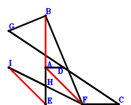
\(\because \) FC//AD and FC=2AD \(\therefore \small\overrightarrow{FD}=\small\overrightarrow{FA} + \dfrac{\small\overrightarrow{FC}}{2}\).\(\because \) D is the midpoint of GC \(\therefore \small\overrightarrow{FG}=- \small\overrightarrow{FC} + 2 \small\overrightarrow{FD}=2 \small\overrightarrow{FA}\).\(\because \) H is the midpoint of AE \(\therefore \small\overrightarrow{FH}=\dfrac{\small\overrightarrow{FA}}{2} + \dfrac{\small\overrightarrow{FE}}{2}\).\(\because \) H is the midpoint of IF \(\therefore \small\overrightarrow{FI}=2 \small\overrightarrow{FH}=\small\overrightarrow{FA} + \small\overrightarrow{FE}\).\(\because \) GB⊥BF \( \therefore\small\overrightarrow{BG} \cdot \small\overrightarrow{FB}=\small\overrightarrow{FB} \cdot \left(- \small\overrightarrow{FB} + \small\overrightarrow{FG}\right)=\small\overrightarrow{FB} \cdot \left(2 \small\overrightarrow{FA} - \small\overrightarrow{FB}\right)=2 \small\overrightarrow{FA} \cdot \small\overrightarrow{FB} - \small\overrightarrow{FB}^{2}=0.\)In conclusion, \(\small\overrightarrow{BA}^{2} + \small\overrightarrow{FA} \cdot \small\overrightarrow{IE}=\small\overrightarrow{FA} \cdot \left(\small\overrightarrow{FE} - \small\overrightarrow{FI}\right) + \left(\small\overrightarrow{FA} - \small\overrightarrow{FB}\right)^{2}=- \small\overrightarrow{FA}^{2} + \left(\small\overrightarrow{FA} - \small\overrightarrow{FB}\right)^{2}=- 2 \small\overrightarrow{FA} \cdot \small\overrightarrow{FB} + \small\overrightarrow{FB}^{2}=0\)\(\because\) AF//IE \(\therefore\) \(BA^{2}=AF \cdot IE\).
Exercise 621： Let FABD be a parallelogram. G is the midpoint of EF and HA. AD⊥FB. Given that HE//FA, prove that \(AB^{2}=FA \cdot HE\).
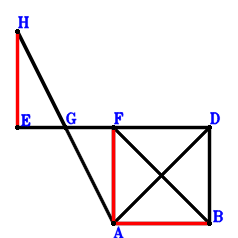
\(\because \) FABD is a parallelogram \(\therefore \small\overrightarrow{AD}=\small\overrightarrow{AB} + \small\overrightarrow{AF}\).\(\because \) G is the midpoint of EF \(\therefore \small\overrightarrow{AG}=\dfrac{\small\overrightarrow{AE}}{2} + \dfrac{\small\overrightarrow{AF}}{2}\).\(\because \) G is the midpoint of HA \(\therefore \small\overrightarrow{AH}=2 \small\overrightarrow{AG}=\small\overrightarrow{AE} + \small\overrightarrow{AF}\).\(\because \) AD⊥FB \( \therefore\small\overrightarrow{DA} \cdot \small\overrightarrow{FB}=- \small\overrightarrow{AD} \cdot \left(\small\overrightarrow{AB} - \small\overrightarrow{AF}\right)=- \left(\small\overrightarrow{AB} - \small\overrightarrow{AF}\right) \cdot \left(\small\overrightarrow{AB} + \small\overrightarrow{AF}\right)=- \small\overrightarrow{AB}^{2} + \small\overrightarrow{AF}^{2}=0.\)In conclusion, \(\small\overrightarrow{BA}^{2} + \small\overrightarrow{EH} \cdot \small\overrightarrow{FA}=\small\overrightarrow{AB}^{2} - \small\overrightarrow{AF} \cdot \left(- \small\overrightarrow{AE} + \small\overrightarrow{AH}\right)=\small\overrightarrow{AB}^{2} - \small\overrightarrow{AF}^{2}=0\)\(\because\) HE//FA \(\therefore\) \(AB^{2}=FA \cdot HE\).
Exercise 710： Let CBDF be a parallelogram. A is the midpoint of DG. H is the midpoint of AI and EF. GC⊥BF. Given that EI//AF, prove that \(BA^{2}=AF \cdot EI\).
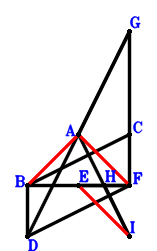
\(\because \) CBDF is a parallelogram \(\therefore \small\overrightarrow{FD}=\small\overrightarrow{FB} - \small\overrightarrow{FC}\).\(\because \) A is the midpoint of DG \(\therefore \small\overrightarrow{FG}=2 \small\overrightarrow{FA} - \small\overrightarrow{FD}=2 \small\overrightarrow{FA} - \small\overrightarrow{FB} + \small\overrightarrow{FC}\).\(\because \) H is the midpoint of EF \(\therefore \small\overrightarrow{FH}=\dfrac{\small\overrightarrow{FE}}{2}\).\(\because \) H is the midpoint of AI \(\therefore \small\overrightarrow{FI}=- \small\overrightarrow{FA} + 2 \small\overrightarrow{FH}=- \small\overrightarrow{FA} + \small\overrightarrow{FE}\).\(\because \) GC⊥BF \( \therefore\small\overrightarrow{CG} \cdot \small\overrightarrow{FB}=\small\overrightarrow{FB} \cdot \left(- \small\overrightarrow{FC} + \small\overrightarrow{FG}\right)=\small\overrightarrow{FB} \cdot \left(2 \small\overrightarrow{FA} - \small\overrightarrow{FB}\right)=2 \small\overrightarrow{FA} \cdot \small\overrightarrow{FB} - \small\overrightarrow{FB}^{2}=0.\)In conclusion, \(\small\overrightarrow{BA}^{2} + \small\overrightarrow{EI} \cdot \small\overrightarrow{FA}=\small\overrightarrow{FA} \cdot \left(- \small\overrightarrow{FE} + \small\overrightarrow{FI}\right) + \left(\small\overrightarrow{FA} - \small\overrightarrow{FB}\right)^{2}=- \small\overrightarrow{FA}^{2} + \left(\small\overrightarrow{FA} - \small\overrightarrow{FB}\right)^{2}=- 2 \small\overrightarrow{FA} \cdot \small\overrightarrow{FB} + \small\overrightarrow{FB}^{2}=0\)\(\because\) EI//AF \(\therefore\) \(BA^{2}=AF \cdot EI\).
Exercise 733： Let ABGD be a trapezoid with BG//AD and BG=2AD. D is the midpoint of CF. H is the midpoint of AI and EF. BF⊥CG. Given that EI//AF, prove that \(BA^{2}=AF \cdot EI\).
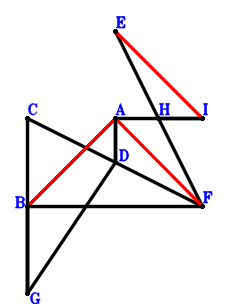
\(\because \) D is the midpoint of CF \(\therefore \small\overrightarrow{FD}=\dfrac{\small\overrightarrow{FC}}{2}\).\(\because \) BG//AD and BG=2AD \(\therefore \small\overrightarrow{FG}=- 2 \small\overrightarrow{FA} + \small\overrightarrow{FB} + 2 \small\overrightarrow{FD}=- 2 \small\overrightarrow{FA} + \small\overrightarrow{FB} + \small\overrightarrow{FC}\).\(\because \) H is the midpoint of EF \(\therefore \small\overrightarrow{FH}=\dfrac{\small\overrightarrow{FE}}{2}\).\(\because \) H is the midpoint of AI \(\therefore \small\overrightarrow{FI}=- \small\overrightarrow{FA} + 2 \small\overrightarrow{FH}=- \small\overrightarrow{FA} + \small\overrightarrow{FE}\).\(\because \) BF⊥CG \( \therefore\small\overrightarrow{FB} \cdot \small\overrightarrow{GC}=\small\overrightarrow{FB} \cdot \left(\small\overrightarrow{FC} - \small\overrightarrow{FG}\right)=\small\overrightarrow{FB} \cdot \left(2 \small\overrightarrow{FA} - \small\overrightarrow{FB}\right)=2 \small\overrightarrow{FA} \cdot \small\overrightarrow{FB} - \small\overrightarrow{FB}^{2}=0.\)In conclusion, \(\small\overrightarrow{BA}^{2} + \small\overrightarrow{EI} \cdot \small\overrightarrow{FA}=\small\overrightarrow{FA} \cdot \left(- \small\overrightarrow{FE} + \small\overrightarrow{FI}\right) + \left(\small\overrightarrow{FA} - \small\overrightarrow{FB}\right)^{2}=- \small\overrightarrow{FA}^{2} + \left(\small\overrightarrow{FA} - \small\overrightarrow{FB}\right)^{2}=- 2 \small\overrightarrow{FA} \cdot \small\overrightarrow{FB} + \small\overrightarrow{FB}^{2}=0\)\(\because\) EI//AF \(\therefore\) \(BA^{2}=AF \cdot EI\).
Exercise 811： Let GDAC be a trapezoid with CA//GD and CA=2GD. J, I, H, D are the midpoints of EF, EA, CA, BF, respectively. BF⊥GH. Given that FA//JI, prove that \(BA^{2}=2 FA \cdot JI\).
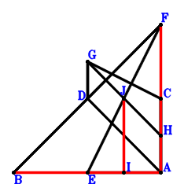
\(\because \) D is the midpoint of BF \(\therefore \small\overrightarrow{AD}=\dfrac{\small\overrightarrow{AB}}{2} + \dfrac{\small\overrightarrow{AF}}{2}\).\(\because \) CA//GD and CA=2GD \(\therefore \small\overrightarrow{AG}=\dfrac{\small\overrightarrow{AB}}{2} + \dfrac{\small\overrightarrow{AC}}{2} + \dfrac{\small\overrightarrow{AF}}{2}\).\(\because \) H is the midpoint of CA \(\therefore \small\overrightarrow{AH}=\dfrac{\small\overrightarrow{AC}}{2}\).\(\because \) I is the midpoint of EA \(\therefore \small\overrightarrow{AI}=\dfrac{\small\overrightarrow{AE}}{2}\).\(\because \) J is the midpoint of EF \(\therefore \small\overrightarrow{AJ}=\dfrac{\small\overrightarrow{AE}}{2} + \dfrac{\small\overrightarrow{AF}}{2}\).\(\because \) BF⊥GH \( \therefore\small\overrightarrow{FB} \cdot \small\overrightarrow{GH}=\left(\small\overrightarrow{AB} - \small\overrightarrow{AF}\right) \cdot \left(- \small\overrightarrow{AG} + \small\overrightarrow{AH}\right)=\left(- \dfrac{\small\overrightarrow{AB}}{2} - \dfrac{\small\overrightarrow{AF}}{2}\right) \cdot \left(\small\overrightarrow{AB} - \small\overrightarrow{AF}\right)=- \dfrac{\small\overrightarrow{AB}^{2}}{2} + \dfrac{\small\overrightarrow{AF}^{2}}{2}=0.\)In conclusion, \(\small\overrightarrow{BA}^{2} + 2 \small\overrightarrow{FA} \cdot \small\overrightarrow{IJ}=\small\overrightarrow{AB}^{2} - 2 \small\overrightarrow{AF} \cdot \left(- \small\overrightarrow{AI} + \small\overrightarrow{AJ}\right)=\small\overrightarrow{AB}^{2} - \small\overrightarrow{AF}^{2}=0\)\(\because\) FA//JI \(\therefore\) \(BA^{2}=2 FA \cdot JI\).
Exercise 829： Let HBGC be a parallelogram. J, I are the midpoints of FE, EA, respectively. D is the midpoint of FG and CA. HA⊥BF. Given that FA//JI, prove that \(BA^{2}=2 FA \cdot JI\).
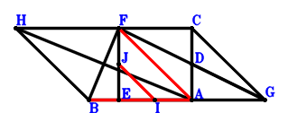
\(\because \) D is the midpoint of CA \(\therefore \small\overrightarrow{AD}=\dfrac{\small\overrightarrow{AC}}{2}\).\(\because \) D is the midpoint of FG \(\therefore \small\overrightarrow{AG}=2 \small\overrightarrow{AD} - \small\overrightarrow{AF}=\small\overrightarrow{AC} - \small\overrightarrow{AF}\).\(\because \) HBGC is a parallelogram \(\therefore \small\overrightarrow{AH}=\small\overrightarrow{AB} + \small\overrightarrow{AC} - \small\overrightarrow{AG}=\small\overrightarrow{AB} + \small\overrightarrow{AF}\).\(\because \) I is the midpoint of EA \(\therefore \small\overrightarrow{AI}=\dfrac{\small\overrightarrow{AE}}{2}\).\(\because \) J is the midpoint of FE \(\therefore \small\overrightarrow{AJ}=\dfrac{\small\overrightarrow{AE}}{2} + \dfrac{\small\overrightarrow{AF}}{2}\).\(\because \) HA⊥BF \( \therefore\small\overrightarrow{FB} \cdot \small\overrightarrow{HA}=- \small\overrightarrow{AH} \cdot \left(\small\overrightarrow{AB} - \small\overrightarrow{AF}\right)=- \left(\small\overrightarrow{AB} - \small\overrightarrow{AF}\right) \cdot \left(\small\overrightarrow{AB} + \small\overrightarrow{AF}\right)=- \small\overrightarrow{AB}^{2} + \small\overrightarrow{AF}^{2}=0.\)In conclusion, \(\small\overrightarrow{BA}^{2} + 2 \small\overrightarrow{FA} \cdot \small\overrightarrow{IJ}=\small\overrightarrow{AB}^{2} - 2 \small\overrightarrow{AF} \cdot \left(- \small\overrightarrow{AI} + \small\overrightarrow{AJ}\right)=\small\overrightarrow{AB}^{2} - \small\overrightarrow{AF}^{2}=0\)\(\because\) FA//JI \(\therefore\) \(BA^{2}=2 FA \cdot JI\).
Exercise 895： Let AFCD be a trapezoid with FC//AD and FC=2AD. H, D, I are the midpoints of AE, BG, EF, respectively. GC⊥BF. Given that AF//HI, prove that \(AB^{2}=2 AF \cdot HI\).
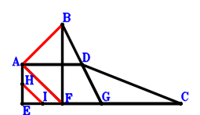
\(\because \) FC//AD and FC=2AD \(\therefore \small\overrightarrow{FD}=\small\overrightarrow{FA} + \dfrac{\small\overrightarrow{FC}}{2}\).\(\because \) D is the midpoint of BG \(\therefore \small\overrightarrow{FG}=- \small\overrightarrow{FB} + 2 \small\overrightarrow{FD}=2 \small\overrightarrow{FA} - \small\overrightarrow{FB} + \small\overrightarrow{FC}\).\(\because \) H is the midpoint of AE \(\therefore \small\overrightarrow{FH}=\dfrac{\small\overrightarrow{FA}}{2} + \dfrac{\small\overrightarrow{FE}}{2}\).\(\because \) I is the midpoint of EF \(\therefore \small\overrightarrow{FI}=\dfrac{\small\overrightarrow{FE}}{2}\).\(\because \) GC⊥BF \( \therefore\small\overrightarrow{CG} \cdot \small\overrightarrow{FB}=\small\overrightarrow{FB} \cdot \left(- \small\overrightarrow{FC} + \small\overrightarrow{FG}\right)=\small\overrightarrow{FB} \cdot \left(2 \small\overrightarrow{FA} - \small\overrightarrow{FB}\right)=2 \small\overrightarrow{FA} \cdot \small\overrightarrow{FB} - \small\overrightarrow{FB}^{2}=0.\)In conclusion, \(\small\overrightarrow{BA}^{2} + 2 \small\overrightarrow{FA} \cdot \small\overrightarrow{HI}=2 \small\overrightarrow{FA} \cdot \left(- \small\overrightarrow{FH} + \small\overrightarrow{FI}\right) + \left(\small\overrightarrow{FA} - \small\overrightarrow{FB}\right)^{2}=- \small\overrightarrow{FA}^{2} + \left(\small\overrightarrow{FA} - \small\overrightarrow{FB}\right)^{2}=- 2 \small\overrightarrow{FA} \cdot \small\overrightarrow{FB} + \small\overrightarrow{FB}^{2}=0\)\(\because\) AF//HI \(\therefore\) \(AB^{2}=2 AF \cdot HI\).
Exercise 897： Let A, H, G be the midpoints of DF, EF, AE, respectively. DB⊥BF. Given that AF//GH, prove that \(AB^{2}=2 AF \cdot GH\).
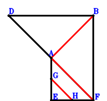
\(\because \) A is the midpoint of DF \(\therefore \small\overrightarrow{FD}=2 \small\overrightarrow{FA}\).\(\because \) G is the midpoint of AE \(\therefore \small\overrightarrow{FG}=\dfrac{\small\overrightarrow{FA}}{2} + \dfrac{\small\overrightarrow{FE}}{2}\).\(\because \) H is the midpoint of EF \(\therefore \small\overrightarrow{FH}=\dfrac{\small\overrightarrow{FE}}{2}\).\(\because \) DB⊥BF \( \therefore\small\overrightarrow{BD} \cdot \small\overrightarrow{FB}=\small\overrightarrow{FB} \cdot \left(- \small\overrightarrow{FB} + \small\overrightarrow{FD}\right)=\small\overrightarrow{FB} \cdot \left(2 \small\overrightarrow{FA} - \small\overrightarrow{FB}\right)=2 \small\overrightarrow{FA} \cdot \small\overrightarrow{FB} - \small\overrightarrow{FB}^{2}=0.\)In conclusion, \(\small\overrightarrow{BA}^{2} + 2 \small\overrightarrow{FA} \cdot \small\overrightarrow{GH}=2 \small\overrightarrow{FA} \cdot \left(- \small\overrightarrow{FG} + \small\overrightarrow{FH}\right) + \left(\small\overrightarrow{FA} - \small\overrightarrow{FB}\right)^{2}=- \small\overrightarrow{FA}^{2} + \left(\small\overrightarrow{FA} - \small\overrightarrow{FB}\right)^{2}=- 2 \small\overrightarrow{FA} \cdot \small\overrightarrow{FB} + \small\overrightarrow{FB}^{2}=0\)\(\because\) AF//GH \(\therefore\) \(AB^{2}=2 AF \cdot GH\).
Exercise 2087： Let D be the midpoint of CB. CF⊥FB. AB=FA. Prove that DA⊥FB.
Exercise 2401： Let ACBE be a cyclic quadrilateral, CB intersects AE at F. D is the midpoint of CB. AD⊥BF. Given that A, E, F are collinear, prove that \(AB^{2}=AE \cdot AF\).
\(\because \) D is the midpoint of CB \(\therefore \small\overrightarrow{FD}=\dfrac{\small\overrightarrow{FB}}{2} + \dfrac{\small\overrightarrow{FC}}{2}\).\(\because \) ACBE is a cyclic quadrilateral, CB intersects AE at F \(\therefore \small\overrightarrow{FA} \cdot \small\overrightarrow{FE} - \small\overrightarrow{FB} \cdot \small\overrightarrow{FC}=0\) . . . . . . \(①\)\(\because \) AD⊥BF \(\therefore \small\overrightarrow{DA} \cdot \small\overrightarrow{FB}=\small\overrightarrow{FB} \cdot \left(\small\overrightarrow{FA} - \small\overrightarrow{FD}\right)=\small\overrightarrow{FB} \cdot \left(\small\overrightarrow{FA} - \dfrac{\small\overrightarrow{FB}}{2} - \dfrac{\small\overrightarrow{FC}}{2}\right)=\small\overrightarrow{FA} \cdot \small\overrightarrow{FB} - \dfrac{\small\overrightarrow{FB}^{2}}{2} - \dfrac{\small\overrightarrow{FB} \cdot \small\overrightarrow{FC}}{2}=0\) . . . . . . \(②\)In conclusion, \(\small\overrightarrow{BA}^{2} - \small\overrightarrow{EA} \cdot \small\overrightarrow{FA}=- \small\overrightarrow{FA} \cdot \left(\small\overrightarrow{FA} - \small\overrightarrow{FE}\right) + \left(\small\overrightarrow{FA} - \small\overrightarrow{FB}\right)^{2}=- 2 \small\overrightarrow{FA} \cdot \small\overrightarrow{FB} + \small\overrightarrow{FA} \cdot \small\overrightarrow{FE} + \small\overrightarrow{FB}^{2}=①-2\cdot②=0\)\(\because\) A, E, F are collinear \(\therefore\) \(AB^{2}=AE \cdot AF\).